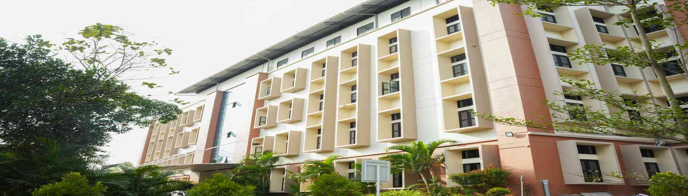

KMCT Institute of Technology and Management is a recently established engineering college at Malappuram with a key determination to provide technology of tomorrow. Our state-of-the-art campus is equipped with modern facilities to support a holistic learning environment. We have well-equipped classrooms, advanced computer Labs with cutting-edge equipment, a comprehensive library, and dedicated spaces for research and collaboration. Additionally, our sports facilities, hostels, and recreational areas contribute to the overall well-being of our students.
| Courses | Department | Intakes |
|---|---|---|
| B.Tech in AI and Data Science | Computer Science | 60 |
| B.Tech in Computer Science and Engineering | Computer Science | 30 |
| Master of Computer Applications | MCA | 50 |
| MBA | MBA | 60 |